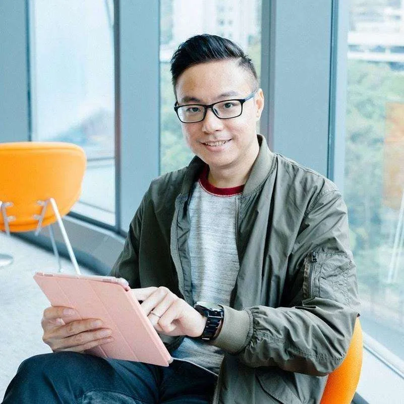

一間沒有窗的小房間
頭幾個月，我和 Jay 在股東公司裡分隔出來的小房間工作。手上還沒有產品，只有一句寫給自己看的話：「釋放數據力量，讓孩子自信地擁抱將來。」憑多年累積的信任，加上合夥創辦人的陣容，十幾間先導學校先簽下合作意向。
12 月 5 日，一千多架寫上夢想的紙飛機，從孩子手裡飛上灰色的天。
- 成為數碼港培育計劃成員
- 前海深港青年夢工場計劃成員
Adam Chan
AI 生活策展人從事教育科技工作逾 25 年。由 18 歲自學網頁設計的少年，做到電子校園公司總經理，再與夥伴聯合創立 GRWTH，把學校、家庭和社區接成一個教育生態圈。現居英國，把 AI 帶進生活、學習和工作。
「真正重要的東西，用眼睛是看不見的。」《小王子》，陪我走過整段創業路的一本書
這頁的配色，取自我 1998/99 年設計 TCP 教師平台小冊子時寫下的理念：大面積白底、藍色主色、黃色點綴。

1998–2002
18 歲那年，我在阿姨的 IT 公司由中文打字員做起，再自學平面和網頁設計。灣仔電腦中心買回來的《Photoshop 4.0 Wow Book》是我的天書，每時每刻都在讀。第一次學 CMYK 對色、第一次收到印刷成品，那份興奮我到今天仍然記得。
1999 年，我把寵物、小遊戲和 Flash 動畫放在一起，做了個人作品「動の物」，憑它在網頁設計比賽得獎，也得到《電腦廣場》跨頁專訪。之後我進了衛星電視台做網頁設計，一年間由設計師做到高級設計師。
2000 年，萬里機構邀請我把這些技法寫成書。一年後，《Flash 動之物世界》出版。Flash 早已成為上世紀的古董，那本書卻是我留給自己的時代紀念品。
自己開設計公司那兩年，我嘗到「手停口停」的滋味，也開始問：一盤生意，怎樣才可以走得長遠？
「動の物」原作畫面。點一下看大圖。
2003–2015
一次因緣把我帶進教育。2003 年，一家位於科技大學內的教育科技公司請我加入，我由設計團隊主管做起，在香港和廣州建立團隊，之後做過銷售、市場、產品研發和售後服務，2008 年起擔任總經理。
設計師想的是「這個畫面美不美、順不順」；經理人要想的，是「這盤生意撐不撐得住、這班人帶不帶得動」。這十二年，我開始學習怎樣把一個好念頭，做成學校長期依賴的東西。
2015–2022
2015 年，我離開工作十多年的安穩位置，和太太 Jay 及幾位合夥創辦人由零開始，創立 GRWTH，讀音 Growth，成長。我們以學生成長為中心，把學校、家庭和社區接成一個教育生態圈。
向下捲動，時間線會向左移；手機上可左右滑動。
頭幾個月，我和 Jay 在股東公司裡分隔出來的小房間工作。手上還沒有產品，只有一句寫給自己看的話：「釋放數據力量，讓孩子自信地擁抱將來。」憑多年累積的信任，加上合夥創辦人的陣容，十幾間先導學校先簽下合作意向。
12 月 5 日，一千多架寫上夢想的紙飛機，從孩子手裡飛上灰色的天。
經香港青年協會安排，我和一眾 IT 業界代表到禮賓府，與 Elon Musk 及時任特首交流，分享香港創科業界的特色和發展。
收費是家長每個月一定會做的事。我們獲 Mastercard、滙豐、數碼港及 10 間先導學校支持，推出香港首個 In-App 綜合支付渠道的教育界流動繳費方案。鳳溪第一小學首日，超過六成家長即場完成下載和付款。
「勿忘記：成功是大家一起合作和努力的成果。」
疫情一來，我們把雲端家校通訊平台免費開放給所有有需要的學校和社福團體，再與騰訊雲合作推出雲端點播（VOD）教學支援，最終支援接近三百間學校、幼稚園和教育中心。
成功之後，壓力才真正開始。我學到的一課：創辦人要及早說清楚，甚麼可以討論，甚麼不能再讓。
2022 年 9 月 30 日，我和太太 Jay 從 GRWTH 畢業。八年前帶着一個夢想由零開始；交棒時，公司資本充足、站得穩。臨別，我送給同事一本《小王子》。
「我即將去走一段新的路，去尋找生命裡更多的星星。」下一站：英國，第二人生
學校一年到頭要收家長的錢：活動費、書簿費、雜費。通告、簽回、付款和對帳本來是分開的幾件事。我們用十個月，由零做出一套多元化手機支付及對帳系統：家長用慣用的渠道付款，錢一進來，零散的交易自動歸位，學校會計一鍵對帳。
收費只是入口，替學校省下那本帳，才是真功夫。這是整個團隊一邊學、一邊做的成果。
2016–2020
報章、雜誌和電視台的訪問與報導。點一下可看大圖；有連結的，可以直接看原文或片段。
2015–2018
我把自己玩穿越機的興趣，變成學校的 STEM 課堂活動。多次獲學校、電台及電視台邀請，分享無人機和穿越機的玩法，以及怎樣把它們轉化成教學。
2022–今天
離開 GRWTH 後、去英國之前，我和太太從入夜一直談到天亮，把過去多年像作品集一樣逐項排出來看。我們只看事實：做過甚麼，學會甚麼。原來那些本事早就長在身上，不會跟着任何一張名片消失。
2023 年底，我們到英國生活，住在鄉郊，行公園、走湖區、逛博物館。2022 年在香港已開始接觸 AI，到了英國，它成了一副剛好接上我舊本領的新工具。
「一個孩子真正需要的，是被看見。」
2015 年，一個小女孩在紙飛機上寫：想幫媽媽工作，讓媽媽多點時間陪她。
「最大的考驗，往往不是學一樣你不會的東西，而是放下一樣你太會的東西。」
由設計師走到 CEO，靠的是 unlearn and relearn。
「嘆，不是停下不走；是終於懂得，一邊前行，一邊讚嘆此刻。」
我和 Jay 給自己造的一個小徽章。
常被問到的幾條問題。答案摘自我的回憶錄《一個教育科技創業者的成長課》。
做了十年以上，我越來越清楚看見一道牆：把系統賣給學校，碰不到孩子怎樣長大、家長怎樣參與這一層。要把學校、家庭和社區連起來，留在原地做不到。
不符合我核心價值的工作，再大，我也提不起勁；可是真正值得做的事，再難，我都會想辦法。
設計師和 CEO 南轅北轍。知識上要不斷學習，心態上要不斷 unlearn and relearn，把舊的自己忘掉，重新學一次。真正讓我學得下去的，是我從來不是一個人在學、一個人在扛。
我和太太選了一種生活態度：享受簡樸的慢生活，但用最新的技術和視野去經營它。對一個做了大半輩子「用科技解決問題」的人來說，AI 不是一場要追趕的潮流，更像一副剛好接上舊本領的新工具。
兜兜轉轉這麼多年，我做的還是最初那一件事：讓教育裡的人，輕省一點；讓真正重要的東西，被看見。
曾任香港教育署課程發展小組資訊科技項目顧問、香港電子學習聯盟首席技術顧問、香港數碼港 Creative Micro Fund 導師。多次獲教育局、香港數碼港及業界活動邀請擔任分享嘉賓。